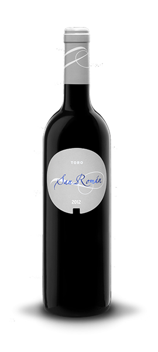
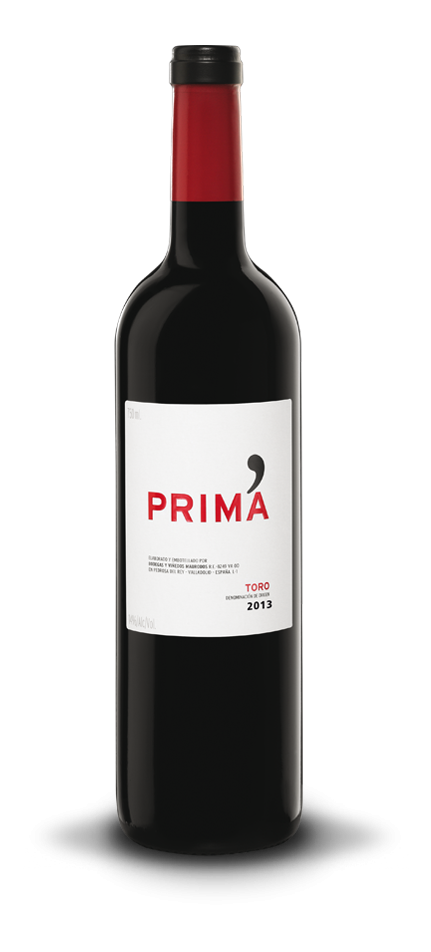
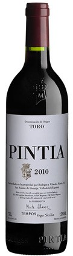
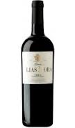
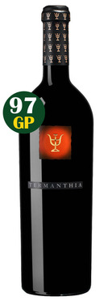

Toro es una denominación de origen (DO) de las provincias de Zamora y Valladolid, España.
Regada por el río Duero, la zona de producción incluye doce municipios de la provincia de Zamora (Argujillo, La Bóveda de Toro, Morales de Toro, El Pego, Peleagonzalo, El Piñero, San Miguel de la Ribera, Sanzoles, Toro, Valdefinjas, Venialbo y Villabuena del Puente) y tres de la de Valladolid (San Román de Hornija, Villafranca del Duero y los pagos de Villaester de Arriba y Villaester de Abajo, del término municipal de Pedrosa del Rey), teniendo la localidad de Toro como centro de la denominación. Obtuvo la calificación de Denominación de origen en el año 1987.
La altitud de los viñedos está comprendida entre los 600 y 750 metros, los suelos son pardos con textura arenosa, pobre en materia orgánica y con bajo contenido en sales minerales.
El clima es mediterráneo continental, y las precipitaciones oscilan entre los 350 y 400 mm anuales. Los inviernos son rigurosos (lo que implica temperaturas mínimas extremas y la prolongación del periodo de heladas) y los veranos cortos, no excesivamente calurosos y con importantes oscilaciones térmicas entre el día y la noche.
|  |
San Román.Los San Román son vinos profundos y minerales que aúnan potencia y elegancia, poseen taninos civilizados y una densa textura en la boca, con nítidos sabores de fruta negra. Construidos para crecer en botella se han minimizado los procesos de estabilización para garantizar un máximo respeto a la uva y la tierra. | |
|  |
Prima.Con una crianza de un año y procedente de viñas más jóvenes, Prima es un vino estructurado pero fácil de beber, con taninos pulidos y un roble sutil. Un toro moderno, frutal y civilizado para todo tipo de público. | |
|  |
Pintia Mágnum 2010.Pintia Mágnum 2010 es un Vino Tinto elaborado con uva Tempanillo (Tinta de Toro) obtenida de viñedos de entre 40 y 60 años de edad. Ha tenido una crianza en barrica nueva de roble francés 70% y americano 30%, durante 12 meses. Tiene un color profundo color cereza picota, un olor fresco dando una nariz muy frutal y a la vez floral. En boca tiene un ataque fresco y alegre, medio de boca amplio y opulento dando un final anormalmente fresco. En boca se reconocen los mismos aromas que en nariz siendo fundamental esa explosión pura y directa a fruta fresca y para nada compotada. | |
|  |
Gran Elías MoraEl Gran Elías Mora es el resultado de nuestras mejores viñas de la Cuesta de los Lobos y sólo se embotella tras una rigurosa selección en las mejores añadas. Es un vino con mucha personalidad; profundo, complejo y fresco al mismo tiempo. Ideal para el lechazo típico de la zona. | |
|  |
Bodega Numanthia, Termanthia, 2011 .Termanthia es el vino más excepcional de uno de los más recientes fenómenos de la viticultura española, la bodega Numanthia Termes, fundada por los hermanos Eguren en 1998 y luego adquirida por la multinacional de lujo LVMH. Manuel Louzada , su actual responsable, ha entendido muy bien el particular carácter de este vino único, elaborado a partir de viejas cepas de Tinta de Toro que crecen en el histórico viñedo de Argujillo (Toro), con un rendimiento que alcanza apenas para elaborar unas 6000 botellas de un tinto redondo y suculento, de boca rotunda, con taninos muy concentrados y extenso final. |